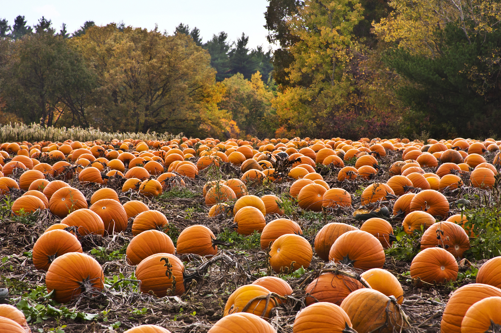

Did you know that October is the #1 time for poeple to get into a relationship? Accoridng to an Elite Daily study of 119 participants ages 18 to 38, the best month to start a new relationship is October! "Cuffing season" is a relationship phenomenon where people begin to actively seek out dates, relationships, and sex to make it through the fall and winter months.
With this being said, it can sometimes be difficult for new or seasoned coupled to find something to do during the autumn season. Don't stress any further. Here is a list of amazing date ideas for the Fall of 2022.
Pumpkin Patches are one of Fall's greatest gifts to the mid-west. You can easily spend a day at a pumpkin patch. Patches offer the opportunity to pick your pumpkins out from the field, enjoy a corn maze, and much much more!

Oktoberfest is a German tradition, but a fun and unique expereince for anyone! Many towns host
Nothing says fall like cheering on your local high school football team! Wether you went to the school yourself, or moved to town later on, attending the local game is sure to pack some excitement. Not only will it be fun to cheer on the team, it will be a great way to encourage the young players to pursue their goals!
Bonfires are a fun way to gather with friends and family OR just hang out with a loved one. Dinner plans can be made easy with some hotdogs over the fire, and smores for desert! Let the conversations flow naturally, or tell scary stories to each other.
Visitng a winery may feel like something older

Visitng a brewery is a fun way to spent a rainy day! Not only will you have the opportunity to drink delicious brews, but you will also have a chance to see how the beers are made!
Oktoberfest in Decatur, IL!
Thanksgiving is one of the amazing major holidays that take place in - but it can be filled with a lot of pressure and sometimes unpleasant family members. Take a break from the stress, and get your friends together for a fun night filled with great food, and fun games!
I hold the power to the copyright of this website. Thnaks for not stealing. September 19 2022